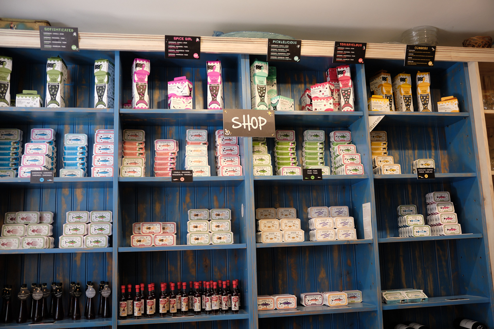
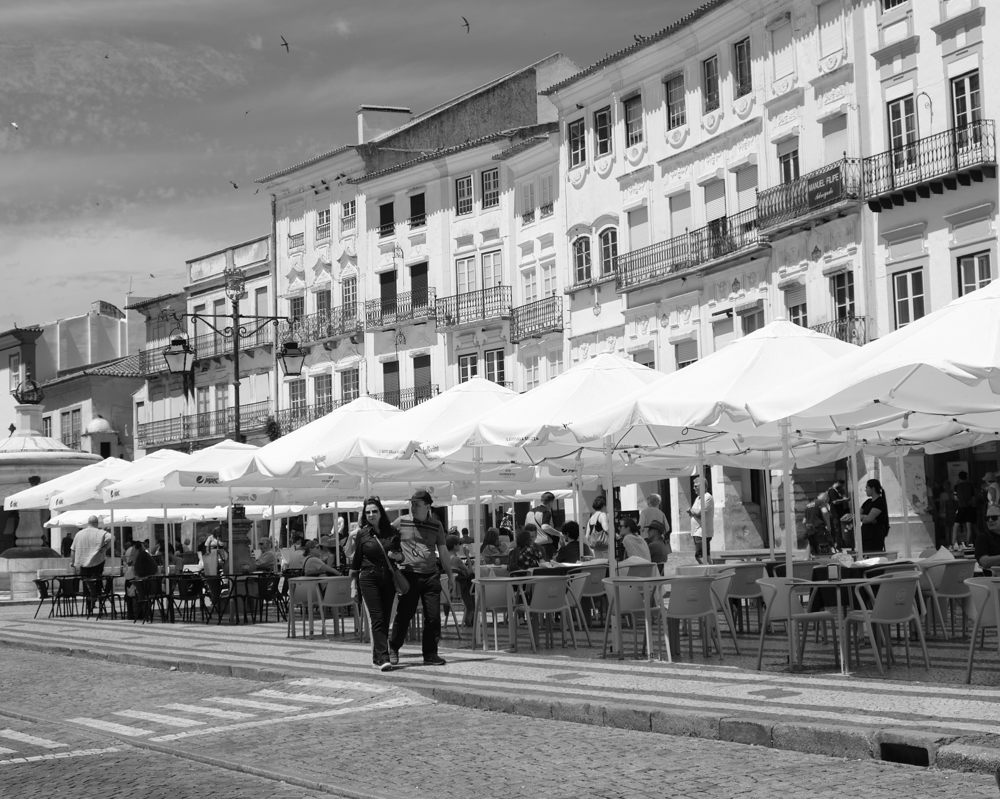

In May 2023, we returned from Portugal with over 400 photos. For this blog. I picked just a few favorites with a story to tell. A separate photo album covers our time in Magical Madeira.
Arrival in Cascais
The idea to visit Portugal began with an invitation from the Jacobs Foundation to attend a conference on the theme of how learners can adapt to our changing world. As the timing fit my 60th, Audrey and I decided to make it a birthday trip.
The conference was a wonderful experience. I stayed with 50 scholars in an old citadel in Cascais. The conference had a lot of time to talk and debate. And the conference agenda allowed for afternoon strolls each day. I particularly liked a cliffside walk. The cliff was punctuated by riverbeds running out to the sea, and I climbed down to a riverbed to snap this view. A path out to the sea is a great metaphoric start for a visit to Portugal.
Meeting Audrey in Lisbon
After the conference in Cascais, Audrey joined me in Lisbon. We started by hanging out on the elevated patio of our wonderful hotel, the Memmo Alfama, enjoying the extravagant view and a drink. The hotel was a treat to come home to after each day of touring.
Often we could ride the scenic #12 or #28 tram back to the Alfama district. We were warned that the trams were pickpocket risks, but we didn’t experience issues. We rode many trams. Upon arriving back in the Alfama, we’d stroll down a quiet alley which ended at our hideaway hotel.
Food: Modern Meets Traditional
I expected to find traditional foods like sardines in Portugal, but didn’t expect all the creative adaptations of their cuisine to modern tastes and techniques. One quirky find was Miss Can, a hipster sardine bar, pictured below. Just sardines on fresh bread – delicious! And it was steps away from our hotel.
Also near our hotel was a restaurant called Audrey’s Bistro and of course we had to eat there! We ate at everything from a Michelin two-star restaurant to the Time Out food hall to little modern cafes, and it was all delicious.

Here’s one of too many dishes at a Michelin 2-star, with edible gold foil. Lisbon is a relatively affordable place to indulge in a long, slow, delight-filled dinner.
Jacaranda Season
May was a beautiful time to visit because Lisbon was full of purple jacaranda trees in bloom. It is a delightful city for strolling, with discoveries around every corner. We had perfect temperatures, although it was sometimes a bit windy.
Graffiti
Portugal is colorful in another unexpected way: graffiti is abundant. They keep the monuments and most important places clean, but paint is abundant around railyards and abandoned buildings. And Lisbon is a city of contrasts. Much of historical Lisbon has been bought up by foreigners on Golden Visas. But there was poverty nearby, too. The graffiti is a reminder that Portugal is still undergoing massive economic transitions.
Getting Around
We really enjoyed all the forms of transportation. We took trams and buses. We rode scooters. We found Ubers to be ridiculously inexpensive. And we took trains. It was all easy to navigate.
A few times we used the Glória Funicular, which goes up a very steep grade. At the top is a park with an amazing view. At the bottom, the best gelato! Here one upward-bound and one downward-bound funicular meet at the middle as they go up and down the hill, with people walking alongside the tracks.
After a particularly delicious gelato, we considered riding this famous outdoor elevator, which goes up a hill between neighborhoods. But there was a long line, so I just snapped the photo.

Jerónimos Monastery
Of touristy things in Lisbon, the Jerónimos Monastery stood out as most worthwhile. We had a heck of time getting there because there was a marathon in the streets the day we went. Trams weren’t running and we ended up in a packed bus full of runners wearing numbered cards. And there was a long line. But it was worth it.
The Manueline architecture is very ornate, and I took lots of photos through arches of the spires. But I especially liked a telephoto shot of a well-preserved gargoyle, a snake eating a clam.
Sintra
We rode the train on a great day trip is to Sintra. Sintra is beautiful hillside where the rich built their summer palaces, about 10 miles away from the sea, perfect for catching a sea breeze.
Upon arriving, we decided to walk into town rather than following the lemmings onto the tourist bus. We were glad we did, because we had a very quiet time in the National Palace. We took the English self-guided audio tour, and loved it. As pictured below, it really projects Portugal’s past power. Indeed, everywhere you go in Portugal there are symbols related to boats and navigation, the source of ancient power.
Then we went up to the Moorish Castle, atop the hill. It is a thousand years old and amazingly atmospheric. We loved climbing about on the castle walls.
The most famous attraction, however, disappointed. The Pena Palace is a relatively modern fantasy. It had a complex ticket timing system, and we blew it, so we ended up waiting around for a long time to go inside. And in the end, it wasn’t worth it – the National Palace is a much better tour. It is colorful, however. Very instagram friendly.

And after our much delayed tour of the Pena Palace we were running late for our train, so we took a Tuk Tuk on an amazingly wild ride down the mountain. We just barely made our train.
Évora
Our other day trip was to Évora, and we had to wake up very early to catch the train. We were rewarded by a magical sunrise in Lisbon, looking up the Alfama hill where we were staying. We got to Évora in time for a little breakfast, and were horrible Americans who rushed through our coffee and croissant, much to the owner’s dismay.
From Évora, we took a tour to see the ancient monoliths (a bit like Stonehenge), and that tour was really interesting. But the big surprise was happening upon a harvest in a cork forest. The tour guide stopped the van and we all watched cork being expertly peeled from a tree and loaded on a truck.
We also toured around Évora, but our guide was disappointing. It’s a nice place to learn about the awfulness of the Inquisition. But overall, not a must see. And from Lisbon, it’s quite a long day trip. Although we were exhausted when we got back to our hotel in Lisbon, the hotel was featuring a private Fado concert that night. The wonderful music ended being another highlight of the trip.

Jewish Tour Extraordinaire
Audrey saved the best for last. She found and booked a Jewish walking tour. There isn’t actually that much Jewish history to see in Lisbon. Yet Professor Paolo Scheffer was the most amazing tour guide ever. He is a historian and an activist for preservation of historical places and artifacts. We learned about 600 years worth of Portugese Jewish history and every moment was fascinating. There are proud moments, and tragic moments. Stupid moments, and small victories. Conspiracy theories and little known massacres. Myths debunked and new history in the making. It was supposed to last 3 hours but went on for at least 5 hours. We didn’t even notice the time going by.
And it is always delightful to stroll in Lisbon. I took so many photos of narrow streets like this one in Barrio Alto..

Looking back on the photos, we enjoyed a tremendous variety of fun experiences all centered on Lisbon. People were friendly, everything was easy to do, and there were so many great choices for each day. Of course, any trip is only good as the person you are with. I was glad to be with my beautiful wife Audrey.